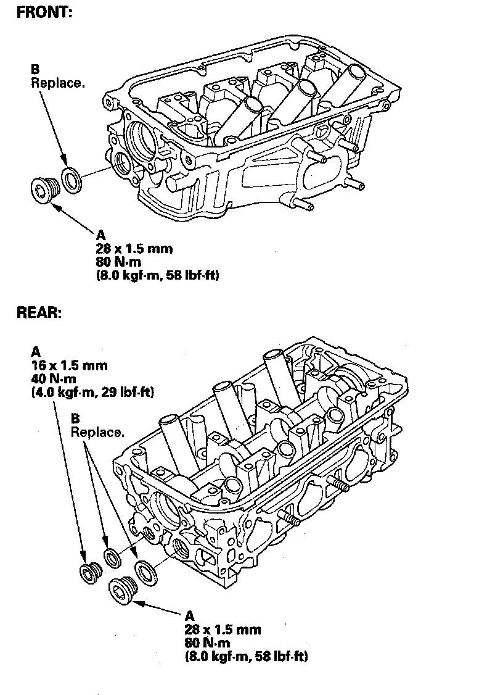

Operation CHARM
: Car repair manuals for everyone.
Home
>>
Acura
>>
2007
>>
MDX V6-3.7L
>>
Repair and Diagnosis
>>
Engine, Cooling and Exhaust
>>
Engine
>>
Cylinder Head Assembly
>>
Service and Repair
>>
Removal and Replacement
>>
Sealing Bolt Installation
Sealing Bolt Installation
Sealing Bolt Installation
NOTE:
When installing the sealing bolt (A), always use a new washer (B).
